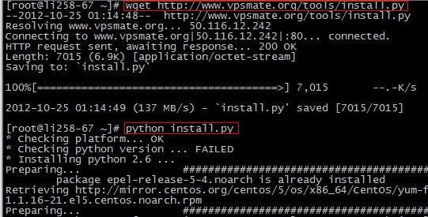
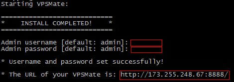

操作系统：CentOS/Redhat 5.4 或 5.4 以上版本，32位或64位均可，推荐使用 CentOS 6.2 64位。
内存大小：运行时占用约 20MB 左右的服务器内存。
请使用现代浏览器访问面板（IE8+、Firefox 14+、Chrome 21+），推荐使用 Chrome。
使用 SSH 连接工具，如 PuTTY、XShell、SecureCRT 等，连接到您的 Linux 服务器。
执行以下命令开始安装：
# wget https://raw.githubusercontent.com/doudoudzj/vpsmate/master/install.py
# python install.py
如下图所示：

安装完成后请设置管理员用户名和密码，如果直接回车，则使用默认的用户名
admin和密码admin。
设置完后，打开给定的链接地址即可访问您的 Intranet 面板。
如下图所示：

请查看 Intranet 使用手册。